We're just helping you feed it the data it's craving.
Mac, VPS, or Raspberry Pi. Free on unlimited gateways. A friend's onboarded in 5 minutes.
curl -fsSL https://carapace.info/install.sh | bash
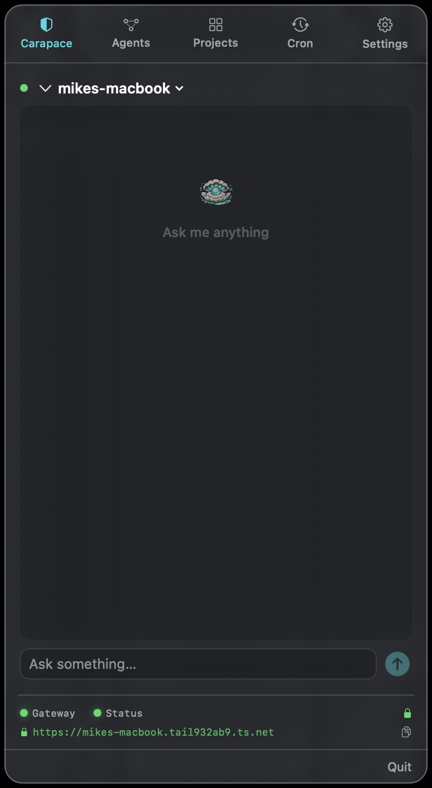
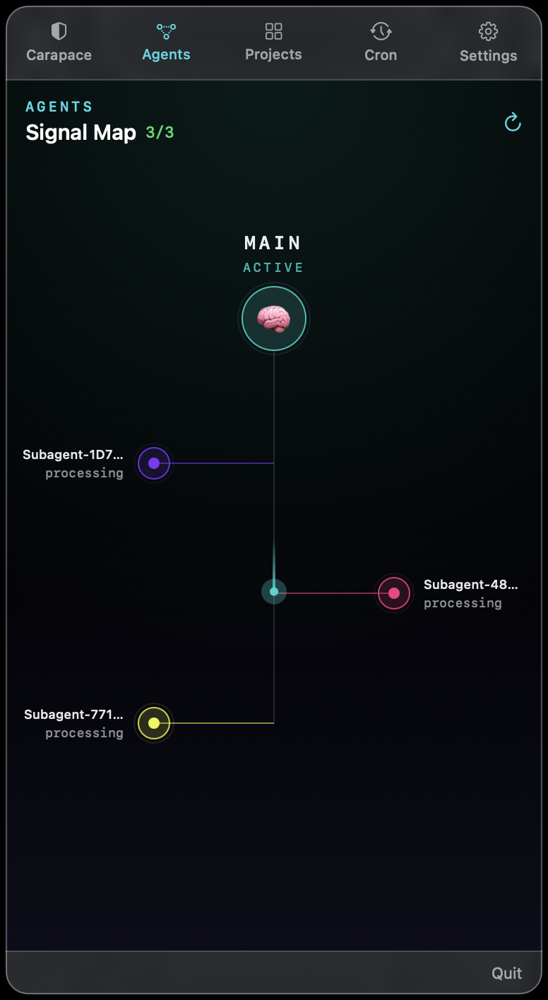
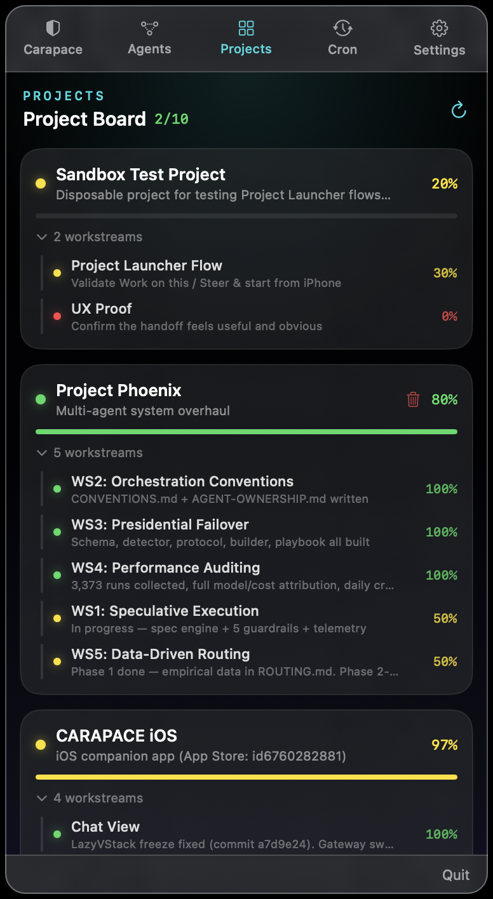
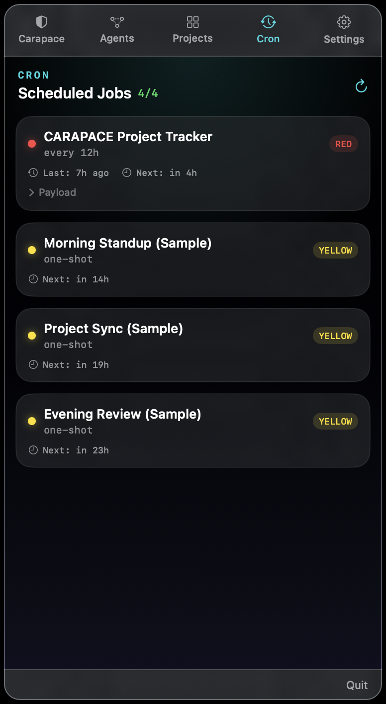
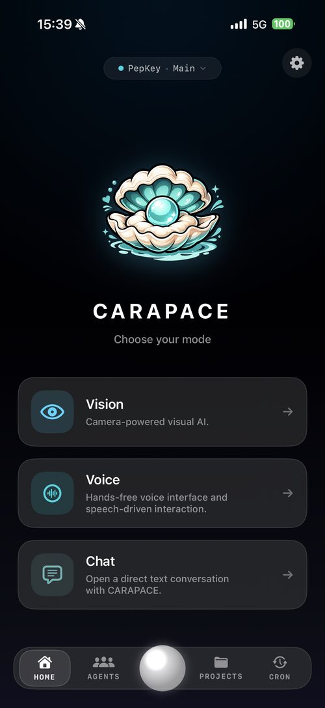
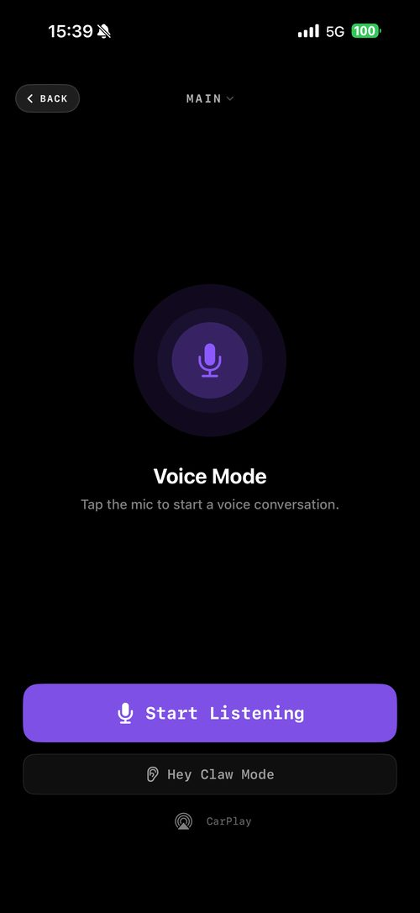
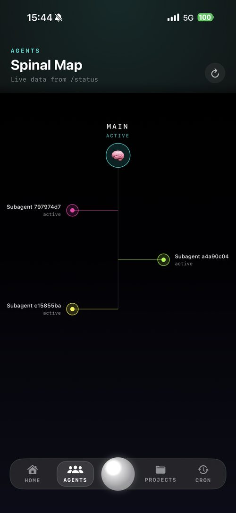
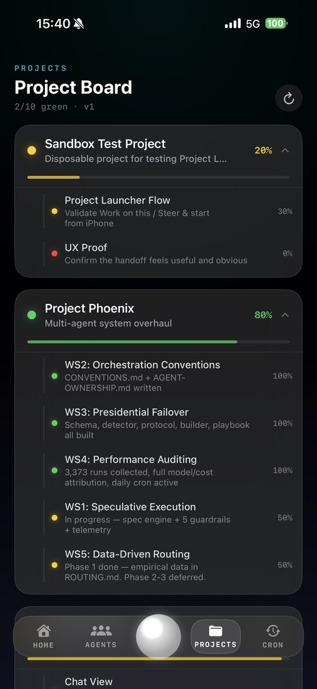
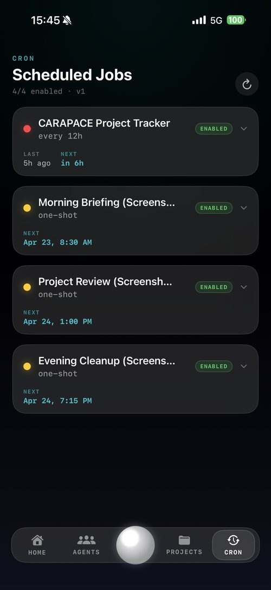
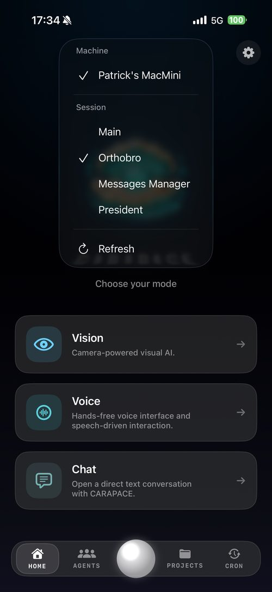
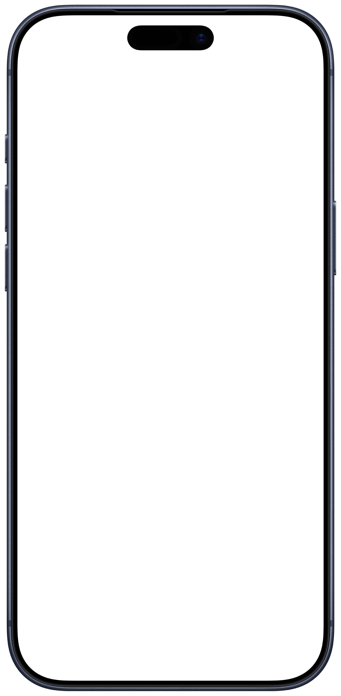
Why CARAPACE
Context tracking means you can switch between your VPS and your Mac and the AI doesn't get lost. It stays on task, tracks projects, remembers decisions. Work on your server, review on your laptop — same brain, zero re-explaining.
No monthly AI subscription. No enterprise per-seat tier. A VPS, a Raspberry Pi, an old Mac Mini in a closet — whatever hardware you already trust. A free Google API key gets you web search, browser control, code execution, cron jobs, and multi-agent orchestration.
Point your phone camera at anything. Documents, receipts, error messages, handwritten notes, parts you can't identify — your AI sees it and responds. Live camera feed on iOS, photo upload everywhere.
Not a substitute for professional medical, legal, or financial advice. Always verify what the AI says before acting on it.
Power users get headless Linux on a VPS with SSH and cron jobs. Your parents get a Mac app with a guided setup wizard that installs everything automatically. Same platform, different entry points.
This isn't a chat wrapper. It's a full agent runtime with real capabilities.
Install
Each guide is a 3-to-5 step walkthrough. Send the link to a friend — they'll handle the rest.
Ventura and later
Headless / VPS
curl -fsSL https://carapace.info/install.sh | bash
iPhone companion
What's under the shell
Real project tracking. Live agent orchestration. Status, in your pocket.
Every project your agents are touching, with live progress and per-workstream status. Force-press any project to drill into workstreams — granular progress, active blockers, who touched what last.
Live view of your running agents — main orchestrator, subagents, what they're chewing on. When something breaks, you see it. When something finishes, you know.
Every scheduled job in one list — next-run ETAs, last-run results, RED / YELLOW / GREEN health at a glance. Force-press a job to open its payload, edit the schedule, or fire it now.
Meta Ray-Ban glasses + CARAPACE. Hands-free voice, live vision, every direction you look — all routed through your own gateway.
Targeting later this year, the first 500 CARAPACE supporters on Power or Corporate will be first in line for TestFlight access — no waitlist, no extra cost. Glasses support is pending Meta opening third-party SDK access for Ray-Ban; we have no partnership with Meta and can't guarantee Meta will open that SDK on any specific timeline. The Power / Corporate IAPs remain fully valuable on their own (gateway pairing + device cap) regardless of whether glasses support ships.
What you can do with it
Voice + camera + your own AI's memory. Here's what people actually do with it once it's set up.
Open the fridge, ask. Carapace scans what's there, cross-references your pantry log, and names three things you can cook right now — not 40-minute recipes that assume you have saffron.
Walk the thrift-store aisle with Carapace live. Point at anything interesting — instant eBay sold-listing average, Mercari range, resale spread. "That midcentury lamp? $12 here, $180 sold last week."
Walk your shop or warehouse naming items out loud. Your Mac keeps the spreadsheet live, flags low stock, and drafts reorder emails when a SKU dips below threshold. No clipboards.
Landmark in a new city. Plant at the nursery. Error code on a dishwasher. Mushroom in the woods. Engine noise you can hear but can't describe. Point, ask, get a real answer with sources.
Point at the leak. Carapace walks you through the fix while watching your progress. It remembers your house — "that's the same water heater we looked at in March; the pilot light's on the lower-left panel."
Menu abroad, product label, traffic sign. Translation with context: "this is a regional dialect for…," "this dish is usually served…," "this warning means stop within 50m." Beyond flat Google Translate.
Six examples. Infinite more. Your AI knows what you look at, what you said yesterday, and what's in your tools. Build whatever routine fits your life — it's already in the box.
Pricing
Run CARAPACE on as many Macs, VPSs, and Raspberry Pis as you want — zero cost. The iOS tiers below unlock how many of those gateways a single iPhone can connect to. One-time purchase, no subscriptions.
Free forever
iPhone pairs with 1 gateway. Mac & Linux always unlimited.
Friends & family
iPhone pairs with up to 5 gateways.
Heavy homelab
iPhone pairs with up to 10 gateways.
Small team
iPhone pairs with up to 50 gateways.
Pick your flavor. Each install guide is a short picture-by-picture walkthrough you can send to a non-technical friend.
curl -fsSL https://carapace.info/install.sh | bash